Astronomia (AST0001) · Curso de Física · UDESC
O céu como laboratório físico
Aula 1 · Fundamentos observacionais e escalas de medida
Prof. Dr. Rafael Camargo Rodrigues de Lima · 2026/2
O que esta aula responde
- Como se mede uma direção no céu, e com que precisão
- Que sistemas de coordenadas existem e quando usar cada um
- De onde saem a altura de um objeto, o nascer e o poente
- Por que existem estações, e por que não é pela excentricidade
- Por que o dia solar e o sideral diferem de 3 min 56 s
- Como sair de uma data no calendário e chegar à altura de uma estrela
- Por que todo catálogo precisa declarar uma época
A limitação que virou método
Quase tudo que sabemos do universo vem de observação à distância.
- Não se coloca uma estrela em uma bancada
- Não se repete a formação de uma galáxia
- Não se acelera a história cósmica
O que chega até nós: luz, posição, tempo, movimento — e, em casos especiais, partículas e ondas gravitacionais.
A cadeia que atravessa o curso inteiro
observável → calibração → modelo → grandeza física
- Fluxo, posição e tempo de chegada são o que se mede
- Massa, distância, temperatura e idade são o que se infere
- Toda inferência carrega hipóteses — e elas precisam ser ditas
Medir uma direção é medir um ângulo
- A esfera celeste tem duas dimensões: só direção, nunca distância
- Unidade prática: o segundo de arco
1° = 60′ = 3600″
Aplicação: a maior paralaxe do céu
Proxima Centauri desloca-se 0,77″ ao longo do ano. Em radianos:
É o maior efeito de paralaxe que existe — e são milionésimos de radiano. Toda a astrometria vive nessa escala, e é por isso que a unidade de trabalho é o segundo de arco, não o radiano.
A constante mais usada da astronomia prática
Converter radianos em segundos de arco:
Não é constante física: é só 180 × 3600 / π.
Aplicação: o tamanho angular do Sol
O diâmetro solar sobre a distância, convertido por 206265:
Meio grau — e a Lua subtende quase o mesmo. É essa coincidência que torna possíveis os eclipses totais.
Aproximação de pequenos ângulos
Um objeto de tamanho ℓ a distância d subtende:
Erro menor que 1% para θ < 10°. Em segundos de arco, é exata para qualquer propósito.
Aplicação: o diâmetro de Júpiter
Na oposição o disco mede 47″, e o planeta está a 4,2 UA:
Valor tabelado: 142 984 km — três algarismos batem, e a conta foi uma multiplicação. A mesma relação ao contrário: uma moeda de 1 real subtende 1″ a 5,6 km.
Calibrando a intuição
Do olho nu ao VLBI vão seis ordens e meia de grandeza: 60″ / 20 μas = 3 × 10⁶.
Ângulo sólido
Direções ocupam área na esfera; um cone de meia-abertura α subtende:


Para α pequeno, é a área do disco de raio angular α — e é essa integral que reaparece no Capítulo 3, ao converter intensidade em fluxo.
O céu em graus quadrados
Guarde esse número: ele converte a área de um levantamento em fração do céu, e portanto contagens em densidade.
A esfera celeste
- Não é uma casca real: é uma construção geométrica
- Duas estrelas próximas no céu podem estar a kiloparsecs uma da outra
- Coordenadas celestes fixam direção, não posição
O Cruzeiro do Sul, em profundidade
Seis graus no céu, 112 parsecs no espaço. A cruz é perspectiva, não estrutura: Ginan, que aparece dentro dela, está 69 pc à frente de Imai. — Paralaxes Hipparcos e Gaia EDR3, via SIMBAD
Sistema horizontal
- Plano fundamental: o horizonte do observador
- Coordenadas: azimute Az e altura h
- Responde à pergunta operacional: dá para observar agora?
- Problema: muda a cada minuto, e depende do lugar
Sistema horizontal, na figura
Zênite, horizonte local, nadir; a altura h sobe do horizonte e o azimute Az corre ao longo dele. Tudo aqui depende de onde você está e de que horas são. — Francisco Javier Blanco González, CC BY 2.5, via Wikimedia Commons
Sistema equatorial
- Plano fundamental: o equador celeste
- Coordenadas: ascensão reta α e declinação δ
- É o sistema de catálogo — acompanha a rotação do céu
- Depende da época, por causa da precessão
Eclíptico e galáctico
- Eclíptico: plano da órbita da Terra — natural para o Sistema Solar
- Galáctico: plano da Via Láctea — separa disco de halo imediatamente
- A escolha do sistema é operacional, não estética
Sistema equatorial, na figura
Ascensão reta contada a partir do equinócio vernal, declinação medida a partir do equador celeste. A eclíptica aparece inclinada de 23°26′ — e é o cruzamento dela com o equador que define a origem. — Tfr000, CC BY-SA 3.0, via Wikimedia Commons
Os quatro sistemas
| Sistema | Plano | Coordenadas | Depende de |
|---|
| Horizontal | horizonte | Az, h | local e instante |
| Equatorial | equador celeste | α, δ | época |
| Eclíptico | eclíptica | λ, β | época |
| Galáctico | plano da Galáxia | ℓ, b | nada |
A convenção do azimute
- Neste curso, o azimute é contado a partir do Norte, no sentido N → L → S → O, de 0° a 360°
- A altura é medida sobre o círculo vertical do astro, positiva acima do horizonte
- É a convenção do IAU SOFA, do Stellarium e do astropy
Textos clássicos de astronomia de posição contam o azimute a partir do Sul. Trocar de convenção sem perceber inverte o sinal do azimute calculado — e é um erro que não deixa sintoma.
Por que ascensão reta em horas
- A Terra gira 360° em 24 horas siderais
- 1h de ascensão reta = 15°
- A diferença de α entre dois objetos é o intervalo entre suas culminações
A unidade codifica um relógio.
Trigonometria esférica
Todo problema de posição vira um triângulo sobre a esfera.
Dedução: lei dos cossenos esférica
Vetores unitários do centro a cada vértice, com A na origem:
O produto escalar û_B · û_C dá o resultado direto.
Lei dos cossenos esférica
Para triângulos pequenos, cos x ≈ 1 − x²/2 e sen x ≈ x: recupera-se a lei plana.
Lei dos senos esférica
Sai do produto vetorial, calculando a mesma área de dois modos.
O triângulo polo–zênite–objeto
Os três lados do triângulo PZX:
O ângulo no polo é o ângulo horário H = Θ − α, com Θ o tempo sideral local.
A equação da altura
Aplicando a lei dos cossenos ao lado ZX — e a dos senos, para o azimute:
A primeira responde a quase toda pergunta prática de observação. A segunda deixa ambiguidade de quadrante — adiante, a forma com atan2 resolve isso.
Consequência 1: culminação
Em H = 0 o objeto cruza o meridiano:
Em Joinville (φ ≈ −26°), objetos com δ = −26° passam pelo zênite.
Consequência 2: nascer e poente
Daí sai a duração do arco diurno: 2H₀, convertido para horas.
Consequência 3: circumpolaridade
- Se |tan φ tan δ| > 1, não há solução
- O objeto nunca se põe, ou nunca nasce
- Em Joinville: δ < −64° é circumpolar
Circumpolaridade, fotografada
Longa exposição no observatório Gemini Norte: as estrelas descrevem círculos em torno do polo celeste. As de raio pequeno nunca se põem — são as circumpolares. — International Gemini Observatory/NOIRLab/NSF/AURA, CC BY 4.0
A eclíptica e a obliquidade
- O Sol descreve um grande círculo ao longo do ano: a eclíptica
- Inclinação em relação ao equador: ε = 23°26′
- Essa é a inclinação do eixo de rotação da Terra
Por que existem estações
O fluxo por unidade de área horizontal:
No verão local, δ tem o mesmo sinal de φ, o Sol sobe mais e sen h é maior.
Os dois efeitos somam
Mais fluxo por unidade de área e mais horas de insolação — os dois na mesma direção.
A geometria das estações
A inclinação do eixo se mantém fixa no espaço enquanto a Terra orbita: em cada solstício um hemisfério recebe luz mais direta e por mais tempo. — NOAA Office of Education, domínio público
A excentricidade não explica
Variação de fluxo ao longo da órbita:
7%, e o periélio é em janeiro — verão do hemisfério sul. O efeito existe, é secundário, e tem sinal oposto entre hemisférios.
A equação do tempo
- O Sol verdadeiro não é bom relógio: adianta e atrasa
- A diferença em relação a um Sol médio tem duas causas independentes
Componente da excentricidade
Segunda lei de Kepler: a Terra corre mais no periélio.
Período de um ano.
Componente da obliquidade
A projeção da eclíptica sobre o equador não é uniforme:
Período de meio ano, porque depende de sen 2λ.
A curva resultante
Duas propriedades geométricas independentes deixam assinatura em um único gráfico observável.
O analema
Posição do Sol no céu sempre no mesmo horário do relógio, ao longo de um ano: o oito deitado é a equação do tempo desenhada no céu. À esquerda às 8h, à direita às 16h. — Daniel Rüdisser, CC BY 4.0, via Wikimedia Commons
Tempo sideral e tempo solar
Dedução dos 3 min 56 s
Em um dia a Terra avança na órbita:


O dia sideral vale 23ʰ56ᵐ04ˢ. Em seis meses a defasagem chega a 12 h — e o céu da meia-noite é o oposto.
Da data civil à altura no céu
A equação da altura só se torna útil quando se sabe obter Θ, o tempo sideral local, a partir de uma data e de uma hora de relógio.
data e hora → JD → GMST → Θ → H → h, Az
- A data vira um contador contínuo de dias
- O contador vira o ângulo de rotação da Terra
- Longitude e ascensão reta dão o ângulo horário
- O triângulo PZX devolve altura e azimute
Quatro elos — e vale percorrê-los uma vez inteira com números.
Elo 1: a data juliana
A JD conta dias corridos desde −4712, e existe para eliminar meses desiguais e anos bissextos das contas:


Data do calendário gregoriano, UT em horas. Se M ≤ 2, faça antes Y → Y − 1 e M → M + 12.
Elo 2: tempo sideral de Greenwich
O tempo sideral médio em Greenwich cresce linearmente com a data juliana:
O primeiro número é o GMST em J2000,0. O segundo excede 360° porque é o ângulo que a Terra gira em um dia solar — é a diferença de 3ᵐ56ˢ deduzida acima, escrita como taxa.
Elos 3 e 4: tempo sideral local
Soma-se a longitude do observador (positiva a leste) e subtrai-se a ascensão reta:
O elo 4 são as duas expressões já deduzidas: a equação da altura e a do azimute.
Exemplo: Antares vista de Joinville
20 de agosto de 2026, 21h00 do horário local (UTC−3). A que altura e em que direção?
| Antares (J2000) | Joinville |
|---|
| α = 16ʰ29ᵐ24,5ˢ = 247,352° | φ = −26,30° |
| δ = −26°25′55″ = −26,432° | λ = −48,85° |
21h00 local são 00h00 UT do dia 21 — a data que entra na conta é a seguinte.
Passos 1 e 2: JD e GMST
Com Y = 2026, M = 8, D = 21 e UT = 0, vem A = 20 e B = −13:
Passos 3 e 4: do ângulo horário à altura


O sinal positivo de H diz que Antares já passou pelo meridiano há pouco mais de duas horas: está a oeste. A altura sai da equação já deduzida, com φ = −26,30° e δ = −26,432°.
O azimute, sem ambiguidade
A lei dos senos deixa dois quadrantes possíveis. Use o arco-tangente de dois argumentos:


Resposta: Antares está a 60° de altura, a oeste-sudoeste.
Duas verificações que não custam nada
Como δ ≈ φ, Antares passa praticamente pelo zênite daqui — o que explica os 60° mesmo duas horas depois da culminação. Se um desses números destoasse do resultado, o erro estaria na cadeia, não no céu.
Precessão dos equinócios
- A Terra é achatada: tem bojo equatorial
- Sol e Lua exercem torque sobre esse bojo
- Um giroscópio não se alinha — ele precessa
A taxa e o período
Sol contribui ~16″/ano, Lua ~34″/ano — a Lua domina, porque o torque escala com M/r³. Sobreposta, a nutação oscila com período de 18,6 anos e amplitude de 9,2″ em obliquidade.
O cone de precessão
O eixo da Terra descreve um cone em 25 800 anos, mantendo a obliquidade de 23,4°. A estrela polar de hoje não é a de daqui a mil anos. — NASA / Mysid, domínio público
Época, equinócio e o ICRS
- Época: instante a que se referem posição e movimento próprio (J2000,0)
- Equinócio: instante que define a orientação dos eixos
- ICRS: adotado em 1998, ancorado em quasares — eixos fixos em 0,03 mas, sem correção de precessão
- Gaia-CRF: a realização óptica, base de toda a astrometria moderna
Sem indicação de época, um catálogo é inutilizável: 50,3″ por ano já são quase um minuto de arco em um único ano — e 2515″, ou 42′, em cinquenta.
Da posição de catálogo ao telescópio
- movimento próprio
- paralaxe anual
- aberração (20,5″)
- deflexão gravitacional pelo Sol (1,75″ no limbo, 4 mas a 90°)
- precessão e nutação
- orientação instantânea da Terra
- refração atmosférica
A soma pode passar de um minuto de arco. Nenhuma etapa é opcional em trabalho de precisão.
Na próxima aula
- Paralaxe, parsec e as unidades modernas
- Movimento próprio e velocidade espacial
- Fluxo, luminosidade e a escala de magnitudes
- Extinção e a ponte para a física estelar